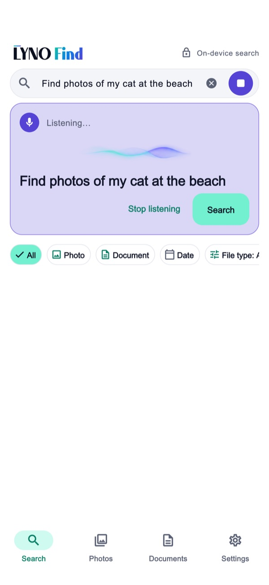
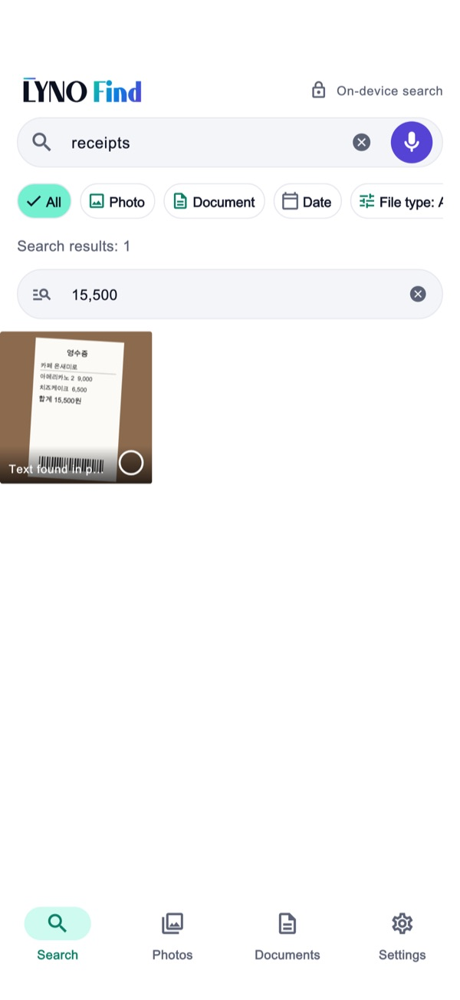

How to search more precisely
1. Type only what you are looking for
Just the words you want work best. LYNO Find looks at what photos show, the text in photos and the text in documents at once. Videos aren't searched yet.
Examples: cat receipt Wi-Fi password
2. Search by folder name
Type the name of a smart folder you turned on, and that folder's photos come along below the results. Type two or three with spaces to see only photos in all of them.
Examples: dog beach sunset
3. Split several words with periods · Multi-search
Words split by periods (.) or commas (,) make a multi-search. Photos with all of them come first, then photos with some of them. Open a photo large to see how many places each word was found.
With spaces only, the words are searched as one phrase, which is handy for wording in documents.
Above the results you see how many photos have all the words and how many have each one. If a search with spaces finds few photos, a "Search each" button appears.
Spaces first, periods for several things. Words with spaces (Japan beach) keep only photos that match all of them: narrow and exact. Words split by periods (dog. cat. sea) are each searched on their own and shown together, those with all words first: wide, several things at once. If a spaced search finds little, tap "Search each".
Examples: dog. cat. beach
4. Just say it · Voice search
Tap the microphone and speak. LYNO Find keeps the words that matter and shows photos that have them together first.
iPhone · SiriWithout opening the app, tell Siri "Find it in LYNO Find", then answer what to find, like "dog photos". Only photos are shown. "Contract documents" shows documents, and just "dog" shows both.
Find it in LYNO Find Search it in LYNO Find Search with LYNO Find Find documents in LYNO Find
Touch and hold the app icon and tap "Voice search", or tap the mic on the home screen widget, to search by voice at once.

Examples: Find photos of my cat at the beach
5. Add where or when
Type what you are looking for with the place it was taken, and only photos taken there are searched, using the location saved in each photo. You can also say it with voice search. Add when it was taken, too.
Examples: Japan beach Paris selfie beach last summer receipt October 2026
6. Search again within the results
Type another word in "Search within these results" above the results to look only among them. For example: search beach, then cat within it.
